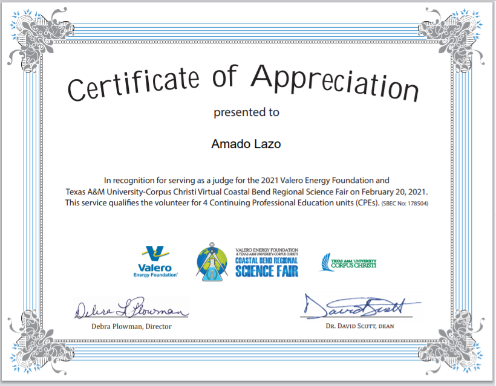
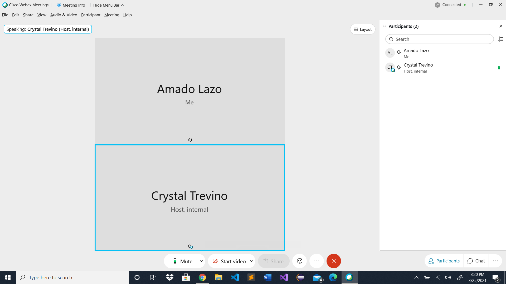
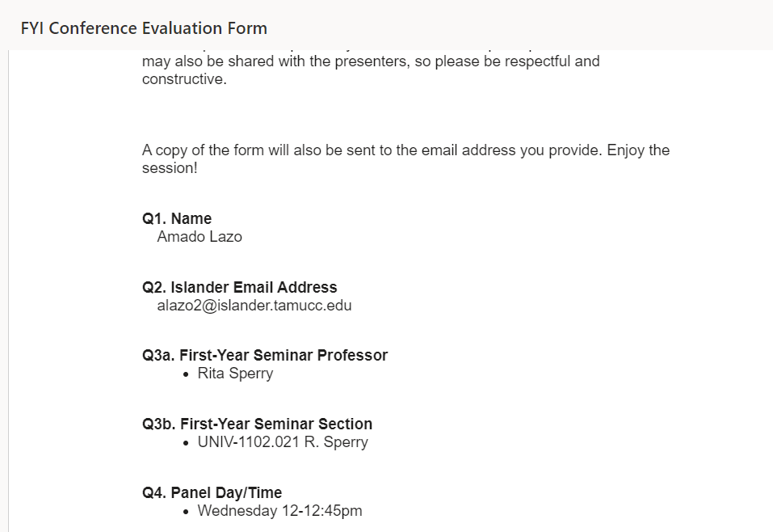

Experiential Artifacts

Last semester we were suggested to start a handshake account which I took the opportunity and did. Here is my handshake account which is up-to-date and includes my skills and past volunteer experience. It was really simple to make and did not take a lot of time out of my day. I find myself updating it every now and then because it is where I get the most job recommendations.

A couple weeks ago, I got invited to judge a science fair for 6-12 graders. I was mainly a judge for the biomedical science field which was an honor due to the fact that I picked who went to state. Valero energy has always been in my family for a while and I plan on doing computer work with them in the future hopefully so there for this will help me in the future.

Three weeks ago which was 3/25, I had to make an appointment with my academic advisor about my schedual because I did not know what classes to take since I am a junior. It turns out that my classes in high school did not relate to my degree that I am going for which is Computer Science and I have to take all 3 years like everyone else. I am a freshman but can take junior classes and qualify as a junior, it is confusing but the way Crystal Trevino explained it made sense to me. We then proceeded to make my schedual which will work great with me!
